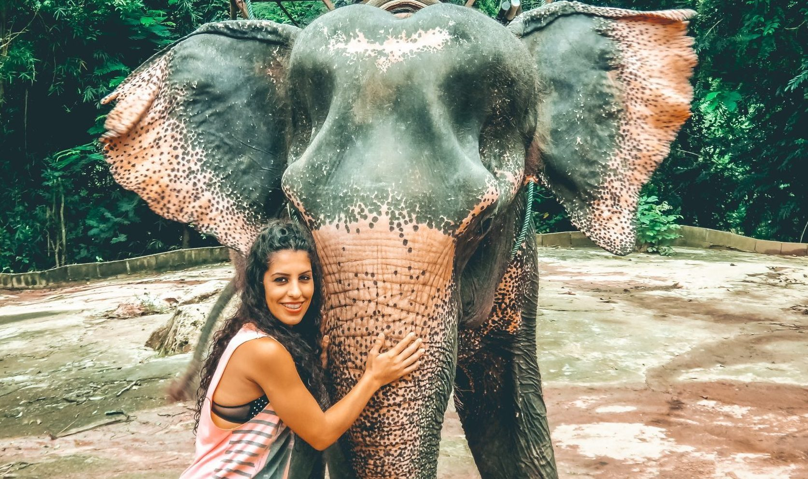
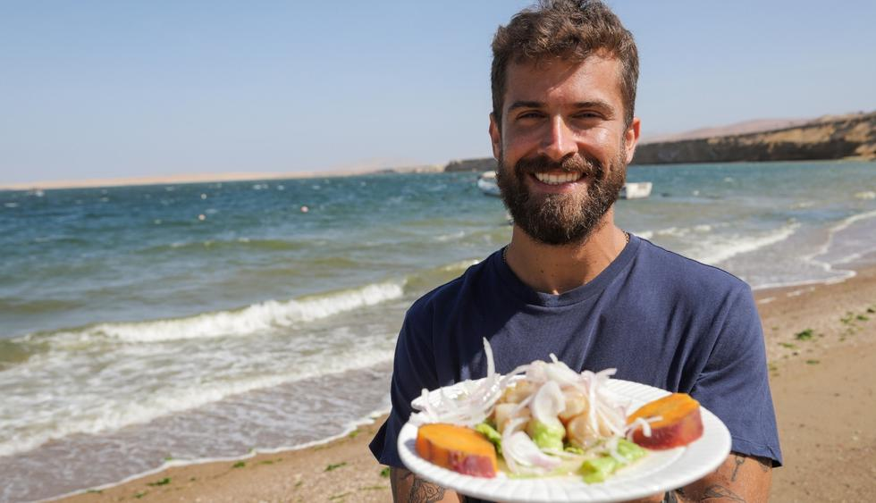
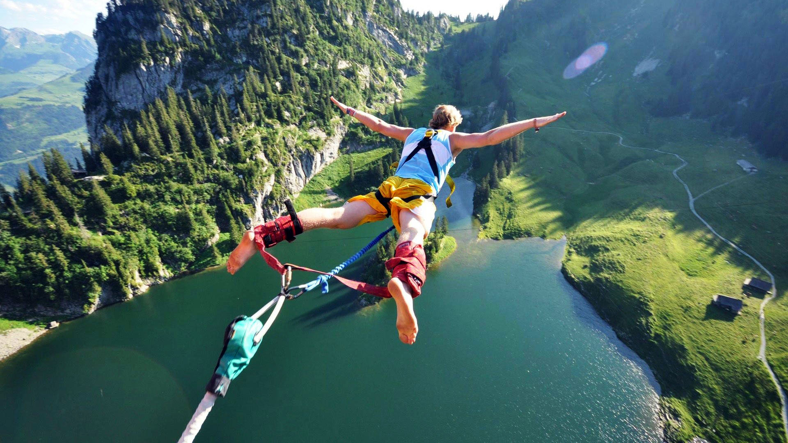

Mi primer viaje
El año pasado me picó un mosquito en Tailandia, concretamente en el tobillo, después de 2/3 días se me infectó y se empezó a hinchar… no podía ni calzarme las deportivas jaja. La tarde de antes de la excursión a “La Playa” pasé por una clínica y pregunté cómo lo veían. Me dijo que pintaba mal, que tendrían que abrírmelo para desinfectar :S, enseguida pensé que si abrían no podría bañarme, es decir adiós excursión y fin a las vacaciones…
Le dije que si podía volver mañana a curarme, su respuesta fue: “si tardas mucho puede que haya que amputar…” :O Yo escuché amputation y me bajó la tensión y todo, mis amigos le decían al médico: “¿¡¿¡Tú estás loco?!?!” El enfermero enfadado y ofendido, una escena de película tipo Resacón en TAILANDIA
Salimos de la clínica, valoramos la situación y dije: “vamos a disfrutar la noche, de la excursión mañana y que sea lo que budha quiera!”. Nos fuimos de fiesta (que no hay nada que el alcohol no cure) y al día siguiente de excursión. Al volver a la clínica me vio de nuevo el médico, y al final sólo me desinfectó por fuera, pastillas, pomada con cortisona y 3 goteros con antibióticos…
Me río ahora de la palabra amputation, pero en ese momento me bajó todo, jaja.. También nos pegamos buena fiesta esa noche en Koh Phi Phi.

Mi Aventura Culinaria
El Lomo Saltado es un plato típico de la gastronomía del Perú cuyos registros datan de fines del siglo XIX, donde se le conocía como lomito de vaca, lomito saltado o lomito a la chorrillana. El plato surge por la influencia de los chinos-cantoneses y contiene la sazón y la mezcla de la cocina criolla peruana con aquella oriental.
La influencia oriental se demuestra por el uso de la técnica de cocción en sartén, ahora conocida como lomo saltado. En realidad, existen muchas variantes introducidas en este plato, porque dependiendo del gusto, se han reemplazado unos ingredientes por otros. Este como muchos otros platos, es criollo y solo es típico del Perú. Es considerado uno de los platos más consumidos popularmente en el Perú.
Igualmente, el lomo saltado se encuentra en todos los menús de los restaurantes peruanos que existen en las ciudades alrededor del mundo, las cuales el Perú ha migrado.
Los ingredientes para preparar este delicioso plato son carne de res, sal, pimienta, comino, cebolla, ajo, ají verde, vinagre tinto o blanco, tomate, perejil, papas y aceite. A veces el sillao y un chorrito de pisco son el toque perfecto para poder llevarte a la boca un trozo de este delicioso manjar. Las papas que suelen acompañar este plato deben estar fritas o sancochadas.

Deporte Extremo
En los últimos años los deportes extremos han ganado popularidad, son una gran manera de entrar en contacto con la naturaleza y salir de nuestra rutina diaria. México es famoso por las locaciones en donde puedes practicar este tipo de actividades.
Paracaidismo
Desde 1991 el Centro de Paracaidismo de Cuautla ha sido el principal promotor del salto en paracaídas en México. Con 250,000 metros cuadrados de terreno, la empresa SkyDive asegura que es la única zona certificada del país, y mantienen un récord perfecto de seguridad en salto tandem
Bungee Jumping
En Cola de Caballo, Nuevo León se encuentra el bungee más alto de todo México, dado que tiene una altura de más de 70 metros, que es como si saltaras de un edificio de 30 metros de altura. Los guías y personal de seguridad aseguran que es una experiencia que te cambiará la vida. Durante tu primer salto Ibo Bungee podrás contratar un paquete con fotos y video de tu salto, para que nunca olvides la experiencia.
